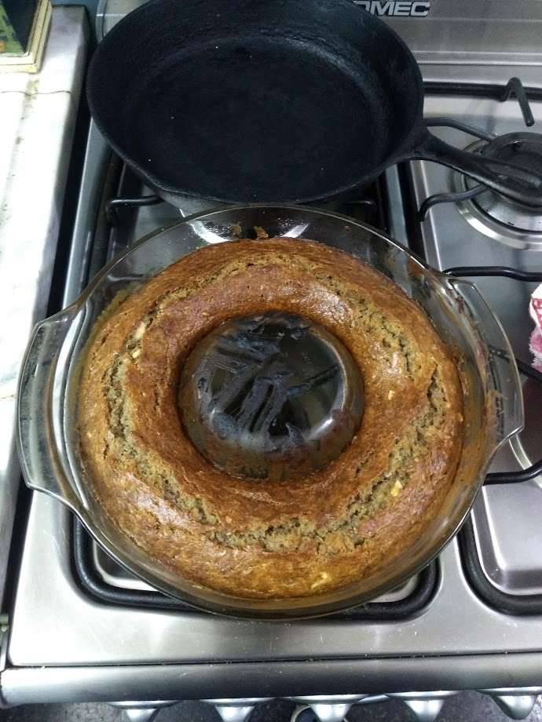

Banana bread
Home

Description
This recipe describes how to build my nonna's banana bread, that she always used to make for the family on the weekends.
I iterated it over the years, trying different ingredients and landed upon the process I'll proceed to explain.
Ingredients
- Bananas
- Salt
- Vanilla extract
- Sugar
- Eggs
- Baking soda
- Flour
- Butter
- (Optional) Walnuts
Steps
- Preheat oven to 175°C
- Grease a pudding pan
- In a bowl, mash bananas with a fork or potato masher
- Melt the butter in the microwave and add to the bowl
- Add the baking soda, salt, sugar, eggs, vanilla and mix thoroughly
- Add flour and mix. Warning: mix as little as possible to avoid developing the gluten
- (Optional) Add walnuts
- Put the mixture on the baking tray and cook in the oven from 50 minutes to an hour, until it passes the toothpick test.
- Take out of the oven and let cool for a few minutes before taking out of the mold, and then let cool completely on a wire rack before cutting and eating
Toothpick test: the bread is done if when inserting a toothpick in the middle, it comes out clean (without mixture getting stuck). It can also be done with a knife.